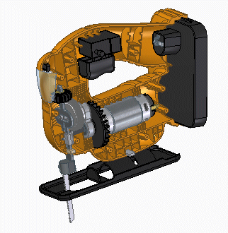
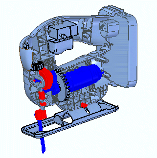

Using Dynamic Visualization to view property information
Available in the Assembly environment, Dynamic Visualization enables you to interactively view, filter, and generate rules for querying property information for all the parts in the active assembly. Using rules, you can temporarily override the color of components associated with the query, and see the results while a query is active. Then you can view the properties for all the parts at once, rather than opening each part document to view its properties.
With Dynamic Visualization you can:
-
Display and filter components and metadata of an assembly.
-
Run multiple queries simultaneously.
-
Provide a visual representation of properties within the Solid Edge model.
-
View a heads-up legend for quick selection of components.
Querying property information
In Dynamic Visualization, you can query property information in an assembly using rules. You create rules by filtering property information on a set of criteria using operators and an emphasis on order of operations. You apply the rules to your model and see the results, as each rule has a corresponding temporary color override.
|
Original assembly  |
Assembly with property filtering rules applied  Red—Purchased parts |
Using reports
A collection of rules can be saved as a report so that it can be viewed, printed, and reused. Additionally, reports can be exported from the assembly in which they were created, then shared and imported for use in other assemblies. Importing a report brings it into the active assembly and makes it the active report.
Use the following workflow when working with Dynamic Visualization:
-
In an assembly, click the Inspect tab→Report group→Dynamic Visualization command.
-
Apply filters to the property values displayed in the property table.
-
Create at least one rule.
-
Name and save a report.
Indexing property information
The indexing of property information occurs simultaneously when you start Solid Edge. As a result, SEPropDB.exe and SEPropReader.exe are included in the list of running processes on your computer. The processes continue to run until you close Solid Edge. If you use Dynamic Visualization infrequently, and want to avoid the in-memory indexing of property information each time Solid Edge starts, on the Assembly tab of the Solid Edge Options dialog box, set Enable delayed indexing when Solid Edge starts. With the option set, the in-memory indexing of property information is delayed until you start the Dynamic Visualization command.
If you start Solid Edge through automation, you may want to delay the automatic indexing.
How do I
Apply filters in Dynamic VisualizationCreate a rule in Dynamic Visualization
Rename a rule in Dynamic Visualization
Reorder rules in Dynamic Visualization
Change color associated with a rule in Dynamic Visualization
Delete a rule in Dynamic Visualization
Create a report in Dynamic Visualization
Delete a report in Dynamic Visualization
Export a report in Dynamic Visualization
Import a report in Dynamic Visualization
Delay property indexing in Dynamic Visualization
Look up more details
Dynamic Visualization commandDynamic Visualization dialog box